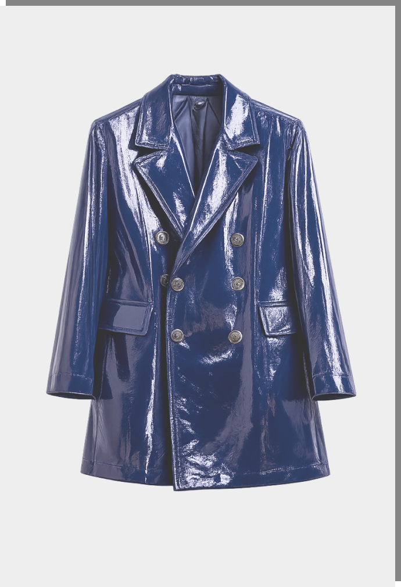

Typography
Escala real do sistema. Anton (display/headings), Archivo (corpo). Cada preview usa o elemento e a classe exatos do CSS original — sem inline styles, sem normalização. Tamanho / line-height à direita.
Grand Prix
Circuit Line
Victory Lap
Pole Position
Fast Lane Import
Nippon Speed Company Tokyo
Colours & Surfaces
Paleta monocromática do sistema (o template de referência não define acentos cromáticos nem gradientes). Swatches usando o componente .color original. Contraste vem do preto puro sobre superfícies claras + a técnica mix-blend-mode: difference.
.navbar-menu): fundo white, borda esquerda 2px grey-200..nav-link): fundo grey-50, borda grey-200, radius 4px..nav-link-animation, .button-block-animated): preto puro que revela texto via difference.UI Components
Markup e classes exatos do original. Passe o mouse para ver o end-state das interações IX2 (fill, wipe, roll, swap de ícone). O template não define estados focus, active ou disabled próprios — só default + hover (IX2) — e não há inputs de formulário, então essas variações são omitidas por fidelidade.

Layout & Spacing
Containers, padding de seção e grids reais do sistema. Tokens extraídos do :root do CSS original.
Motion & Interaction
Comportamentos de motion do sistema. O reveal de entrada roda ao vivo via IntersectionObserver + transições CSS (translate/opacity suave), com progressive enhancement: o conteúdo é visível por padrão e a animação só entra se o JS rodar. Os hovers reproduzem o end-state das interações IX2.
Form. Material.
Presence.
Icons
Sistema de ícones do template: SVGs inline via <img>, cada um com variante normal/hover trocada por opacity. Tamanhos herdados do container (24 / 14 / 13px). Markup e classes originais.